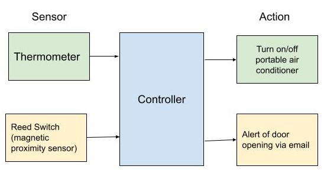

fun stuff i'm working on
If you want to see some of the code I’ve written, check out my Github profile.
Pushover
I’m currently working on a modernized version of the popular 90s video game Pushover with a colleague. In this puzzle game, the user plays an ant who needs to rearrange dominos to get them to all fall over. This remake will have a creative mode where the user can build their own levels. It is being written in Unity.
Mint++
Mint++ is a budget tracker based on Intuit’s Mint, a popular budgeting app. This ongoing project adds features that are missing from Mint, such as:
- Tracking debts that don’t exist in an account, such as as family loan;
- Adding more information to the budgeting categories, showing what is a subcategory of what;
- Changing how rollover balances (a.k.a sinking funds) are displayed in the monthly spending to be more intuitive;
- Showing how much of income is going to taxes;
- Projections to help with planning
Currently, this makes use of MintAPI, which screen scrapes Mint to get account data using Selenium. Mint++ is firstly being developed as a command line application in Python but will include a Web-based UI in the future.
Custom Smart Home System
This project aims to use primarily Arduino to create a customized, cost effective smart home, with the goal of being energy efficient and secure. My home doesn’t have centralized air conditioning or heating, so I needed to implement this myself. A concept map of this system is seen below: 
In the future I would like to use a tool such as Blynk to be able to get information to my phone, or to be able to control the system remotely.
Personal Website
The latest iteration of my personal website (the one you’re reading right now!) was created using the Hugo framework.
ideas without borders
During the second half of my undergrad, I was involved in Engineers Without Borders on their podcast portfolio to create ideas without borders. During this, I was able to deep dive into various social issues in Canada and analyze them from a systems thinking perspective.
Copyright © 2023 Camille Walters